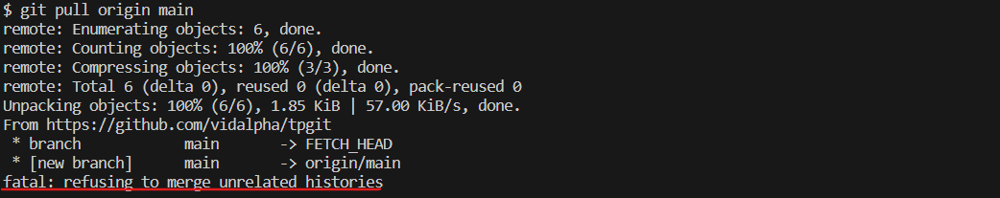
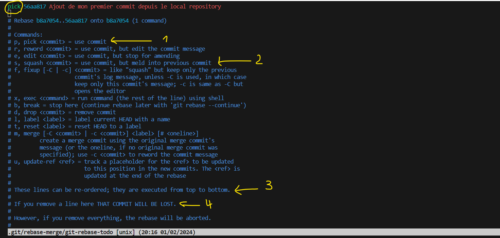

TP1 GIT¶
Objectif
A la fin de cette section, tu seras capable de résoudre la plupart des situations d'utilisation de git en entreprise.
Contenu
I- Initialisation d'un dépôt local
II- Zones et cycles de vie des fichiers
III- Initialisation Dépôt distant
IV- Synchronisation du dépôt local avec le dépôt distant
V- Fichiers ignorés par git
VI- Développements parallèles
VII- Nettoyage des objets non utilisés
VIII- Collaboration
I- Init d'un d√©p√¥t local¶
Question
Que remarquez vous dans votre espace de travail après avoir lancé la commande d'initialisation du dépôt ?
Ajout de fichiers¶
Un peu de markdown¶
Markdown est le type de fichier utilisé par les plateformes de git pour la génération des pages statiques de documentation des projets. Vous pouvez insérer dans un fichier .md des balises html.
Pour faire cette jolie bannière passez par ici
Créer un fichier README.md et copiez le contenu précédent à l'intérieur. Le fichier README.md est l'entrée de notre site statique sur github similaire à index.html pour le html
Etat du d√©p√¥t local¶
Note
Remarquez que l'extension Auto-Open Markdown Preview nous permet d'avoir nous permet d'avoir un aperçu de notre fichier markdown à droite.
Questions
- Commentez les fournies par la commande
git statusen console ? - Que veulent dire
1et2?
Premier commit¶
A chaque commande faite git status pour voir l'état des fichiers.

Questions
- Que veut dire
1? - Ce numéro est-il si court ? Astuce (faites
git log)
Un git status vous permet de constater que votre répertoire de travail est propre.
II- Zones et cycles de vie des fichiers¶
Questions
- Rappelez les zones de git que vous connaissez ?
- Rappelez les commandes pour passez d'une zone à une autre et l'état des fichiers ?
graph RL
subgraph local[local repository]
subgraph main[branche main]
subgraph manipulation[zones de manipulation]
working[working space]
index[index/cache/stage]
end
repository
remise
E[ ]
end
working-->|git add|index
index-->|1-desindexer|working
index-->|git commit|repository
repository-->|2-Annuler un commit|index
repository-->|3-Annuler un commit|working
manipulation-->|4-Mettre de côté|E
E-->remise
remise-->|5-Restaurez la remise|manipulation
end
subgraph remote[remote repository]
remote_main[main]
end
local-->|push|remote
remote-->|pull|localQuestions
- Quelles sont les commandes à utiliser en
1,2,3,4,5? - Quels sont les espaces que
git stashsauvegarde ? - Quelles sont les commandes possibles que vous connaissez pour annuler le dernier commit ? Et pour revenir à n'importe quel commit ?
- Différence entre
git resetetgit revert? - Différence entre
git rm --cachedetgit restore --staged? - Quelle commande utiliserez-vous pour restaurer un fichier dans le
worktreeet lestageà son état tel qu'il était trois commits avant leHEAD?
Utiles:
GIT : stash, revert, restore, rebase, reset, cherry-pick
Zones et cycles de vie des fichiers
III- Init D√©p√¥t distant¶
Premier commit¶
La création du dépôt avec un fichier README.md initial génère un commit.


Warning
Remarquez que la description est mise dans le fichier readme et qu'un premier commit a été fait sur le remote
Modification sur le remote¶
Essayons à présent de modifier le README.md en changeant le titre tpgit

Warning
Remarquez que cette modification nécessite un nouveau commit. Le nombre de commit sur le dépôt distant est passé à 2.
Question
Est-ce le dépôt local et le dépôt distant ont les mêmes historiques de commit ?
IV- Synchronisation avec le d√©p√¥t distant¶
Pour ce faire nous allons suivre les étapes suivantes:
Lier les d√©p√¥ts local et remote¶
Pour lier les dépôts local et remote, vous devriez faire la commande git remote add origin <remote_url>
Questions
- Que veulent dire les autorisations données sur le dépôt distant (
fetchetpush) ? - Connaissez vous la commande
git pull? Quel résultat elle produit ? - Quelles sont les deux opérations effectuées par la commande
git pull?
A la fin de la commande git remote add origin <remote_url>, nous arrivons à cette situation:
graph RL
subgraph local
master
end
subgraph remote
main
end
local-->|push|remote
remote-->|fetch|localPour autant les deux branches ne sont pas encore liées et sont bien comme ceci:
|
|
Pour vous en rendre compte excécuter la commande suivante:

Comme vous le voyez, il n'est dans indiquer la branche qui tracke la branche remote main.
Dans la section suivante, nous allons lier la branche locale à la branche distante.
Lier les branches: locale et distante¶
Cette liaison est possible grâce à la commande:
Cependant, elle se met aussi en place automatiquement lors du premier push et pour cela, nous devrions utiliser l'option -u|--set-upstream pour cette première fois. Les fois prochaines la commande git push seule, suffira.
Questions
- Que se passera t-il après un
pushsi on maintient le nommaster? Astuce (nouvelle branche remote) - Si nous renommions notre branche locale en
main, la commandepushéchouera. Nous devrions utiliser plutôt dans ce cas-là la commandepull. Pourriez-vous expliquer pourquoi ? Astuce (principe entrepulletpush) - A la suite des questions précdentes, le
pullégalement échouera. Pourquoi ? Astuce (ancêtre commun absent)
Testons tout ceci.
Push command¶
Nous allons essayer d'envoyer sur le dépôt distant nos modifications.

Note
Remarquez sur github qu'une nouvelle branche distante du même nom a été créée. Remarquez aussi que la branche locale master traque la nouvelle branche distante master.
Pour la suite au lieu de créer une nouvelle branche master sur la remote, nous allons plutôt renommer notre branche en local en main.
Warning
Avant de continuer supprimer la nouvelle branche distante master qui a été créée.
Renommer une branche¶

Note
Remarquez que le nom de la branche a bien changé en console
Essayons de faire un push avec la branche renommée. Vous remarquerez que le push échoue, ce qui est normal.
Pull command¶
Et le pull ?

üòÖ Encore une autre erreur !!!
Merge - rebase - squash¶
Bon! Abordons alors les concepts de merge, rebase et squash commit afin de mieux nous en sortir puisque un certain merge a échoué.
Info
Source Livre: Git - Maîtrisez la gestion de vos versions (concepts, utilisation et cas pratiques) (4e édition) de Samuel DAUZON, Editions ENI, 2016
Questions
- Pouvez-vous expliquez ce qui s'est produit pour que la fusion des branches distante et locale échoue ? Astuce (
git mergeVsgit rebaseVsSquash commit) - Quel est le comportement par défaut de
git merge? Astuce (commit) - Dans quel cas le
git mergefast-foward produit le même résultat quegit rebase? Astuce (git rebaseVsgit mergeen pratique)
Comme vous venez de le comprendre, pour résumer la situation:
-
git merge: ne peut être utilisé car les branches n'ont pas d'ancêtre commun. C'est pour cela la commande pull a échouée. -
squash commit(git rebase -i ...): résumera l'historique des commits de la branche distance. -
git rebase: nous recréera l'historique. C'est cette option nous allons choisir.
Afin de r√©gler ce probl√®me, nous allons utiliser git rebase, une vrai machine √† voyager dans le temps. üöÄ
Info
La commande git rebase origin/main réorganise les commits de la branche actuelle en les replaçant au-dessus des commits de la branche main. Cela signifie que les commits de la branche actuelle seront remis à jour pour faire référence aux commits de main comme point de départ.
Conseil
Que ce soit git merge <branche_a_integrer> ou git rebase <branche_a_integrer>, il faut se positionner sur la branche source sur laquelle on veut rapatrier la branche à intégrer.

Nous sommes en mode interractif avec l'éditeur vi (Ce lien peut vous être utile). Pour ceux qui ne vous y connaissez pas suivez mes conseils pour vous en sortir.
Questions
Commentez les points 1, 2, 3 et 4 ?
Mais avant d'aller loin, puisque je sais lire dans l'avenir, je pr√©dis que la commande rebase aussi ne marchera pas üòÇ. Sacr√© oiseau de mauvaise augure que je suis!!!
Fermons l'éditeur i en acceptant le rebase.

Questions
- Pourquoi le
rebasen'a pas marché ? - Commentez les
hintsen jaune ?
Note
Remarquez dans la zone en vert en bas dans la console que la stratégie rebase est toujours en cours ?
Gestion des conflits¶
Un conflit Git survient lorsque deux branches ou commits modifient les mêmes parties d'un même fichier de manière incompatible. Dans cette section, nous allons apprendre à résoudre les conflits.
Structure d'un conflit¶

Revenons à VS Code

Resolve in merge editor¶
Suivez les instructions dans VS Code pour terminer.
Résumé
- Vous gardez la zone que vous voulez
- Vous enlevez la zone que vous ne voulez pas
- Ne jamais oublier d'enlever les
délimiteurssinon ils seront commités
Ne jamais oublier
Après la résolution d'un conflit, un `commit nécessaire pour prendre en compte les modification.
Nous venons de résoudre le conflit nous allons alors faire un commit.
Finalisation du rebase¶
A présent nous allons continuer notre rebase.

Cette dernière commande met fin à notre aventure de récupérer les changements provenant du remote. Avant d'envoyer nos modifications en ligne, apprécions l'historique des commits après le rebase.
Questions
- Quels constats faites-vous par rapport à l'ordre des commits dans l'historique?
- Est ce que les hashs des commits sont maintenus ?
- Le fichier
README.mdest-il bien présent dans votre espace de travail? Que donne la commandegit status?
Bon voil√†, vous √™tes un(e) pro de fusions de branches et d'historiques ü§ì. Nous pouvons envoyez nos modifications en ligne.
Envoi des modifications sur le d√©p√¥t distant¶
Nous pouvons aussi utiliser la commande git remote show origin pour nous assurer que tout ok et que la branche locale main trackée bien la branche distante main.

R√©sum√© des commandes de base¶
Nous avions pris un long chemin afin d'aborder des concepts plus ou moins avancés, mais la procédure de récupération et d'envoi en ligne de vos modifications n'est pas si compliquée.
Et puis qui peut le plus, peut le moins dit-on? üòú
Cloner un d√©p√¥t¶
Pour les commandes suivantes, créer un autre répertoire
A ce stade, voici la structure de nos branches locale et remote
graph RL
subgraph local
local_main[main]
end
subgraph remote
remote_main[main]
end
local-->|push|remote
remote-->|fetch|local
local_main-.tracks.-> remote_mainV- Gitignore¶
Dans cette section nous allons apprendre à ignorer des fichiers ou répertoires sensibles. Afin que git tienne compte des fichiers ou répertoires à ignorer, nous allons mettre le nom de ces fichiers/dossiers dans un fichier particulier .gitignore
1) Créer le fichier secret.yml avec ce contenu:
Vous mettrez vos supers fake username et password.
Danger
Ne mettez pas vos informations sensibles ou vos crédentials git. Ce n'est juste qu'un exemple pour la suite.
Question
Après avoir ajouté le fichier secret.yml, lancez la commande git status. Commentez ce que vous voyez ?
2) Ajouter le fichier .gitignore
3) Dans le fichier .gitignore, mettez secret.yml et enregistrer
4) Faites à nouveau git status. Que remarquez vous ?
5) Envoyez la modification en ligne avec le message de commit Ajout du fichier .gitignore
Question
Le fichier secret.yml est-il présent sur le dépôt distant ?
VI- D√©veloppements parall√®les¶
Les branches sont très utiles pour exploirer des pistes de fonctionnalités sans perturber la branche principale (dans notre cas il s'agit de main). Les modifications sur la branche auxilliaire pourront être fusionnées avec la branche principale.
C'est ce que nous allons essayer dans cette section.
Tâches
1) Apportez quelques modifications au fichier README.md
Question
Que veulent dire ces indications (1, 2 et 3) de VS code ?
Basculer vers une nouvelle branche¶
Questions
- Comparez l'état des area dans
mainetmermaid? - Qu'est-ce que vous remarquez sur github quant aux branches créées localement? A quel moment ces branches sont visibles en ligne ?
Précautions avant basculement
L'exemple précédent prouve que vous ne devriez pas avoir de modifications en cours lors du switch vers une autre branche. Gardez votre branche clean avant de basculer vers une autre.
2) Vous êtes sur la branche mermaid. Créer un nouveau fichier mermaid.md avec ce contenu.
3) Faites un commit
Message du dernier commit¶
4) Modifier le message du commit dernier pour préciser que la page d'acceuil a aussi été mis à jour.
5) Ajouter un lien vers mermaid.md dans le fichier README.md et faites un commit
6) Sur la branche main, ajouter une image (le logo de l'UNamur) dans le fichier README.md et faites un commit.
{kind=link}
L'historique des commits sur les deux branches se présente comme suit:
Merge de branches¶
La branche mermaid nous a permis de faire développer la page mermaid.md. Elle est maintenant stable. Nous allons la fusionner avec la branche main.
Pour ce faire positionnez-vous sur la branche main et faites. Réglez les éventuels conflits qui se poseraient

Questions
- Faites un push sur le dépôt distant à partir de la branche
main. La branchemermaidest-elle présente sur le dépôt distant ? Sinon comment pouvez-vous envoyer votre branche localemermaiden ligne afin de permettre aux autres utilisateurs du dépôt de travailler dessus. - Que fait la commande
git cherry-pick? - Différence entre
git cherry-picketgit merge?
Les tags¶
Un tag est un alias (un nom) défini par un développeur dont le rôle est de pointé sur un commit. Les tags sont utilisés pour marquer les numéros de version sur les commits.
Git supportes deux types de tag:
- Les tags annotés:
git tag -a <tagname>
stockent le nom du tag sur un commit donné - Les tags légers:
git tag <tagname>
stockent davantage d'informations en conservant également la date de création et le créateur du tag.
Nous allons ajouter le tag v1.0.0 au commit du merge.

Questions
- Affichez les détails du tag avec la commande
git show v1.0.0? - Comment pouvons nous envoyer les tags sur le dépôt distant ?

Questions
- Voir dans le dépôt distant si le
tagest bien présent ?
VII- Faire du nettoyage¶
Dans cette section nous allons apprendre à faire de la maintenance de git.
git prune¶
Pour supprimer les références locales des branches distantes qui n'existent plus sur le dépôt distant.
Info
Voici comment fonctionne git remote prune :
- Il contacte le dépôt distant spécifié par le nom (par exemple,
origin) et récupère la liste des branches disponibles. - Il compare la liste des branches distantes avec la liste des branches locales sur votre ordinateur.
- Pour chaque branche distante qui n'existe plus sur le dépôt distant,
git remote prunela supprime de votre liste de branches locales.

Git garbage collection¶
Info
git gc est utilisée pour récupérer de l'espace disque et améliorer les performances de votre dépôt Git. Elle fonctionne en supprimant les objets inutiles de votre dépôt local, tels que :
- Objets non compressés: Ce sont des fichiers individuels qui stockent le contenu des objets Git (blobs, arbres, commits, etc.) avant qu'ils ne soient compressés dans des fichiers compressés.
- Chaînes de deltas packagés: Ce sont des chaînes de deltas (différences) entre les révisions Git qui sont utilisées pour stocker les objets plus efficacement dans les fichiers packagés.
- Objets inaccessibles: Ce sont des objets qui ne sont plus référencés par aucun autre objet de votre dépôt et qui peuvent être supprimés en toute sécurité.
VIII- Collaboration¶
Issues¶
Sur le dépôt distant, créer un issue (problème).

Question
Comment faire un commit pour satisfaire cet issue ? Astuce ( Closes #1)
Fork¶
Un fork est une copie d'un dépôt. La création d'un fork vous permet d'expérimenter librement des modifications sans affecter le projet d'origine.
Un fork vous permet de :
- Travailler sur une version indépendante du code source d'un projet.
- Proposer des modifications au projet original. Vous ne pouvez pas modifier directement le code du dépôt original. Vous devez créer une
pull request - Collaborer avec d'autres utilisateurs sur le code.
Warning
Il est important de noter que les forks ne sont pas des copies permanentes du dépôt original.
Exercice
Faire le fork du projet mermaid
Avant un fork¶

Apr√®s un fork¶

Questions
- Quelle est la visibilité d'un fork par défaut ? (privé ou public) ?
- Si le propriétaire du dépôt original supprime son dépôt, qu'en sera t-il des forks ?
Pull Request (PR)¶
Une pull request (PR), ou demande de tirage en français, est un moyen de proposer des modifications à un dépôt Git distant. Elle permet de soumettre vos changements à un responsable de projet pour qu'il les examine et les intègre dans le code principal.
Exercice
Zone d'approbation d'une pull request

Question
- Commentez les zones mis en évidence ?
- Quelles sont les commandes internes effectuées par un
merge commitlors d'unpull request?